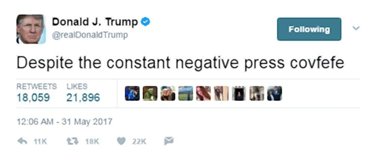

Social media has become omnipresent and we (un)intentionally leave increasingly more information about ourselves: our opinions, habits, interests and beliefs.
The president of the United States is famous for being an avid Twitter user. He is swift to express his opinion directly in a sometimes very raw manner.
This habit of regular commenting on events and persons is a good opportunity to ask: what insights can we gather from 140 characters of typed by POTUS?
The President of the United States is a person with great power and control over the events in the world. He is a representative of the state which is one of the major players in world stability: peace, economy, science and developmet among others.
With great power comes great responsibility, as the president should represent a role model for the nation, while being under constant scrutiny of public and media. Donald Trump's Twitter feed represents an unique insight into mindset and opinions of a leader of a nation and a successful businessman. Without hesitation and careful diplomatic consideration he is posting his opinions freely. In that freedom we also find inspiration to explore what might he reveal about himself and find out more about @realDonaldTrump.
What we publish on the Web does not disappear. This is a very important consequence for social media and our online presence. Even if we seemingly delete an unfortunate image or post, chance is, it is still stored somewhere. This is emphasized to the extremes in cases of celebrities and people of power, such as Donald Trump. Here we see a famous gaffe: a late night "covfefe" tweet. He has deleted the Tweet afterwards, but it was already too late - everyone was talking about it.
In a similar fashion, Tweets are directly accessible to the public. Our opinions from many years, or a late night rant or drunken post - it is saved somewhere. This is only one example of information we leave online: interactions, logs, likes and different metadata is also present to represent our online identity.
We will use the public availability of Donald Trump tweets to gather some insights on his use of Twitter, his habits, reactions and sentiment throughout the years. Moreover, we will look from different approaches his reactions to the news articles about him or his cabinet in the White House.
Donald Trump is a businessman, celebrity, media personality and a president. From the emergence of his Twitter account in 2009. he has posted many tweets, but it is certain that he has social media managers for elements of his media presence.
The majority of the tweets were posted from Android, which is a device of choice for mr. Trump. We can see other utilities, such as iPhone or Web Client being prominent as well. Since Donald Trump has been noted to rarely use computers we can for now assume the posts he made are originating from Android. That is a significant amount of Tweets that are approved, but not directly penned by Donald Trump.
Since becoming POTUS, many concerns were raised for using an insecure Android device. Thus, Trump has switched to iPhone. This is visible from the Twitter data as well: the last Tweet posted from Android is on 25th of March, 2017, keeping his promise of using a more secure device. Seeing that iPhone has been used before as well in parallel, it could be either his social media maganers or himself.